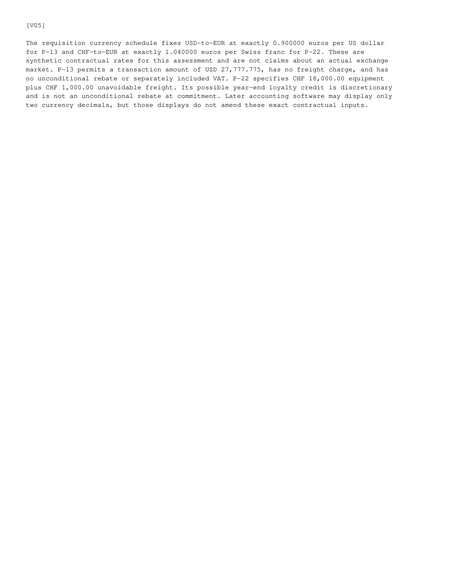

amendment-6.png
Published path: runs/06-procurement-contract-correct/visual-review/amendment-6.png
Open / download original bytes

validation/runs/06-procurement-contract-correct/visual-review/amendment-6.png · 74,438 bytes · SHA-256 68166a7b8e55168a73f60de4115eacf049a8c2915ff2c04a203a75d1ff6586e3
